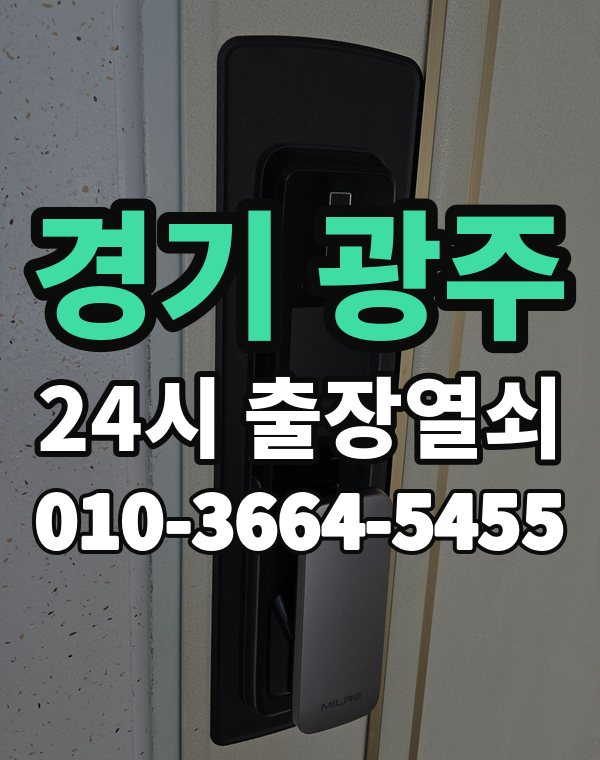

경기 광주 출장열쇠, 이런 동네입니다
경기 광주는 태전, 오포 아파트와 경안동 상가, 곤지암, 퇴촌 전원주택까지 산자락을 따라 넓게 퍼져 있습니다.
전원주택이 많아 대문 잠금장치 연락도 많습니다.

광주시 출장 가는 동네
- 경안동
- 송정동
- 쌍령동
- 태전동
- 오포읍
- 곤지암읍
- 초월읍
- 퇴촌면
- 남한산성면
경안동 출장열쇠, 송정동 열쇠집처럼 동네 이름으로 찾으셨어도 같은 곳입니다.
적혀 있지 않은 동네도 광주시 안이면 다 갑니다.
경기 광주에서 맡기실 수 있는 일
경기 광주에서 전화 주실 때
언덕길과 좁은 길이 많아 들어오는 길을 같이 알려주시면 도움이 됩니다.
위치를 받고 도착 시간을 먼저 말씀드립니다.
경기광주역, 곤지암역, 초월역, 오포 근처라고 말씀해 주셔도 위치 잡기가 쉬워집니다.
가까운 역이나 큰 건물, 단지 이름을 같이 알려주세요.
- 정확한 주소, 아파트라면 동과 호수
- 번호판 상태 (꺼짐, 켜짐, 경고음)
- 거주 확인용 신분증이나 주소 나온 우편물
전화부터 작업까지 순서는 이용안내에 적어 두었습니다.
경기 광주 출장열쇠 자주 묻는 질문
경기 광주 어디까지 출장 오시나요?
경안동, 송정동, 쌍령동, 태전동, 오포읍, 곤지암읍 등 광주시 전 지역 갑니다. 적혀 있지 않은 동네도 광주시 안이면 출동합니다.
경기 광주 늦은 시간 출장도 되나요?
밤이든 새벽이든 받습니다. 어디인지 들으면 언제쯤 도착하는지 바로 말씀드립니다.
끝내 못 열면 돈은 어떻게 되나요?
못 열면 비용은 받지 않습니다. 비용은 작업 전에 먼저 말씀드리고, 괜찮다고 하시면 시작합니다.
집주인이 아니어도 열어 주나요?
거주하시는 분인지 확인한 뒤 엽니다. 신분증이 집 안에 있으면 관리사무소 확인도 됩니다.
경기 광주 도어락 새로 다는 것도 되나요?
네, 합니다. 문에 맞는 제품인지 보고, 고칠 수 있으면 수리를 먼저 권합니다.